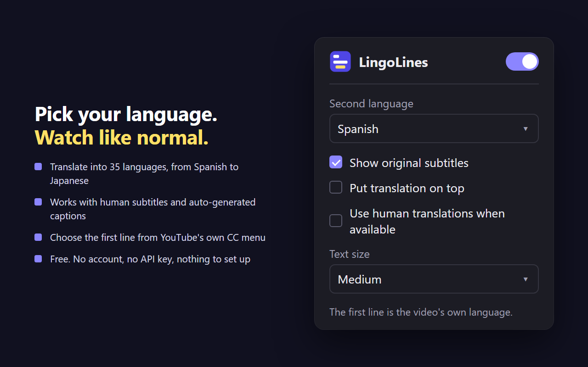

How it works
LingoLines uses the subtitles YouTube already has, so there's nothing to upload, paste or sign in to.
Install it
Add LingoLines to Chrome from the Chrome Web Store. It's free.
Play any video
Open a YouTube video and turn on subtitles with YouTube's own CC button.
Read both lines
The top line is the video's own subtitles. The yellow line underneath is the translation, in sync, sentence by sentence.
Pick your language
Click the LingoLines icon to choose the translation language. It starts in your browser's language.
Made for learning a language while you watch
Hear the original, read it, and see what it means, line by line.
- Translate into 35 languagesSpanish, French, German, Japanese, Korean, Chinese, Portuguese, Hindi and more.
- Human subtitles and auto-captionsWorks with subtitles the creator wrote and with YouTube's auto-generated captions.
- Controlled by YouTube's own buttonsThe CC button turns it on and off. YouTube's subtitles menu picks the first line.
- Your layoutPut the translation on top or underneath, choose the text size, or show just one line.
- Human translations when availableOptionally use a video's human-made subtitles in your language instead of the automatic translation.
- Handles dubbed videosOn videos with several audio tracks, the first line follows the original audio.

Who uses dual subtitles
Anyone watching videos in a language they're still learning.
Learning English
Watch English videos with English subtitles on top and your own language underneath, whether that's Chinese, Japanese, French or any of the 35.
Learning Spanish, Japanese, Korean…
Watch creators in the language you're learning and check every line against your own language as you go.
Bilingual families
Watch together when not everyone in the room is equally comfortable in the video's language.
Watching beyond your language
Follow lectures, news, interviews and cooking videos from anywhere, with the original still on screen.
35 translation languages
The first line can be any language the video has subtitles in. The translation line can be any of these:
- Arabic
- Bengali
- Chinese (Simplified)
- Chinese (Traditional)
- Czech
- Danish
- Dutch
- English
- Filipino
- Finnish
- French
- German
- Greek
- Hebrew
- Hindi
- Hungarian
- Indonesian
- Italian
- Japanese
- Korean
- Malay
- Norwegian
- Persian
- Polish
- Portuguese
- Romanian
- Russian
- Spanish
- Swedish
- Tamil
- Thai
- Turkish
- Ukrainian
- Urdu
- Vietnamese
Questions
Is LingoLines free?
Yes. LingoLines is free to install and use. There's no account, no sign-up and no API key to set up.
Where do the translations come from?
The first line is the video's own subtitles or YouTube's auto-captions. The second line is YouTube's own automatic translation of those same subtitles, so both lines share the same timing. If a video also has a human-made subtitle track in your language, you can choose to use that instead.
How accurate are the translations?
As accurate as YouTube's automatic translation, which handles everyday speech well but can stumble on slang, names and jokes. On videos that only have auto-captions, mistakes in the captions carry into the translation.
Which videos does it work on?
Any video on youtube.com that has subtitles or auto-captions, which is most of them. It can't show anything on a video with no captions at all.
Does LingoLines work on Netflix or other sites?
No. LingoLines works only on youtube.com. It doesn't work on Netflix, Disney+, other streaming sites, or YouTube videos embedded on other websites.
Which browsers does it support?
Google Chrome on a computer (Windows, Mac, Linux or ChromeOS). Edge, Brave and other Chromium browsers can install extensions from the Chrome Web Store, but LingoLines isn't tested on them. It doesn't work in Firefox, Safari, or on phones and tablets.
How do I turn the subtitles on and off?
With YouTube's own CC button, the same way you turn normal subtitles on and off. To switch LingoLines off completely, click its icon in the Chrome toolbar.
Can I change the language of the first line?
Yes. Pick a different language in YouTube's own subtitles menu and the first line follows it. The second line's language is set in the LingoLines popup.
Can I show only one of the two lines?
Yes. In the popup, untick "Show original subtitles" to see only the translation, or set the second language to "None (original only)" to see only the original.
Does LingoLines collect my data?
No. It has no accounts, no analytics and no servers of its own. Your settings are saved in Chrome. It never records which videos you watch. Read the privacy policy.
How is LingoLines different from other dual subtitle extensions?
It needs no account and no API key of your own, because it uses YouTube's own subtitles and translations. The two lines stay in sync because they share the same timing, it follows YouTube's CC button and subtitles menu instead of adding its own controls, and on dubbed videos the first line follows the original audio.
Private by design
- No account or sign-up
- No tracking or analytics
- No ads
- Runs only on youtube.com
Its only other permission is saving your settings. Privacy policy
Watch your next video in two languages
Free for Chrome. Install it, open YouTube, press play.
Add to Chrome, it's free